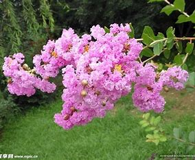
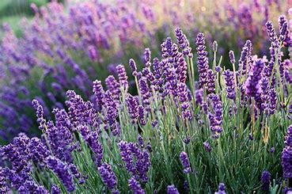

-
绿植实时监控

花名：雏菊
花名：非洲菊
花名：紫茉莉

花名：牡丹
花名：牵牛花
花名：蒲公英
花名：茉莉
花名：玫瑰
花名：月季
花名：荷花
花名：月光花
花名：凌霄花
花名：紫藤
花名：白玉兰
花名：丁香

花名：海棠
花名：海桐
花名：灌木
花名：连翘
花名：迎春花
花名：水仙花
花名：龙舌兰
花名：百合花
花名：仙人掌
在岗护花人员姓名 职位 当前签到次数 前一区间签到次数 张芳娜 园艺 4 5 康振朋 花农 4 5 高宇 花园保安 5 5 曹羽生 园丁 4 5 倪豆豆 环卫 5 5 张子安 保安 3 5 罗怡 保安队长 5 5 魏雨燕 园丁 4 5 -
绿植花卉9104株
- 对比次时昨日累计：46株
- 同比增长：2%
- 安装设备：94
- 在线设备：86
绿植类型比例各类绿植相关人群比例 -
绿植品种识别
-
100%
野菊花/洋甘菊
-
76%
水仙花/百合花
-
82%
康乃馨/牡丹
-
61%

牡丹/月季
-
64%
紫薇/康乃馨
-
42%
紫薇/紫罗兰
-
82%
薰衣草/紫罗兰
-
74%
勿忘我/薰衣草
测试模块康乃馨：母爱、温馨的祝福，尤其适合表达对母亲的感恩。
2019-09-20
百合：百年好合、纯洁神圣，常用于婚礼，祝福婚姻美满。
2019-09-20
向日葵：忠诚的爱慕、积极向上，象征对生活的热爱与阳光心态。
2019-09-20
郁金香：红色郁金香表热烈爱意；紫色郁金香寓意高贵神秘；黄色郁金香象征友谊与开朗。
2019-09-20
薰衣草：等待爱情，传递浪漫与宁静的期许。
2019-09-20
雏菊：天真无邪、藏在心底的爱，传递纯净的情感。
2019-09-20
风信子：点燃生命热情，紫色风信子还蕴含 “悲伤的爱情”，蓝色则代表恒心与贞洁。
2019-09-20
玫瑰：红玫瑰象征热烈的爱情；白玫瑰代表纯洁无暇的爱；粉玫瑰寓意初恋与甜蜜。
2019-09-20
鸢尾花：长久的思念，以优雅花姿传递对远方亲友的深切挂念。
2019-09-20
月见草：默默的爱，适合诠释藏于心底、温柔守护的暗恋之情。
2019-09-20
绿植区参观人次 -
 页面加载中...
页面加载中...